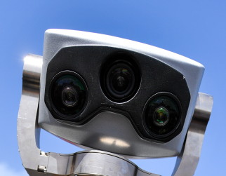
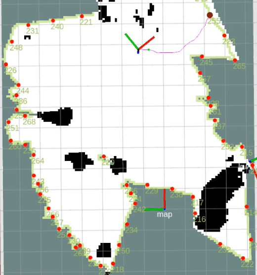

Future planetary exploration envisions robotic agents not only as explorers collecting data, but also as partners in building infrastructure to sustain human activities in space. These agents must sense, act, and interact as extensions of astronauts, while autonomously establishing systems that enable long-term operation, communication, and habitation. Achieving this requires advanced environmental understanding. In the absence of global positioning, accurate localization relative to local scenes is critical for tasks such as grasping and manipulation.
Place recognition enables long-term SLAM stability, while semantic mapping offers contextual information for mission control and terrain traversability assessment. Planetary surfaces present severe challenges: unstructured environments, visual and structural aliasing, lack of distinctive features, and harsh illumination (e.g., lunar south pole). Energy and computational constraints amplify these difficulties. Multi-modal perception — combining visual, LiDAR, and radar sensing — together with deep learning approaches can improve robustness, supporting scene re-detection and semantic interpretation for human interaction.
Recent and planned missions (e.g., NASA’s Curiosity, Ingenuity, and CADRE; JAXA/DLR’s MMX; JPL’s EELS) highlight both the rapid growth of planetary robotics and the complexity of emerging requirements, from autonomous flight to non-wheeled locomotion. These illustrate the pressing need for novel methodologies addressing the perceptual challenges of localization, navigation, and in-situ operations.
This workshop will provide a platform for exchange between mission practitioners and methodological innovators, fostering new solutions to these fundamental problems.


Our goal is to explore and identify new solutions towards the perceptual challenge that planetary rover systems face while exploring severly unstructured environments, under harsh illumationation conditions and extreme perceptual aliasing. In these scenarios, critical challenges arise with respect to fundamental tasks such as:
State Estimation
in absence of stable and unambiguous perceptual cues, robust state estimation is challenged. Novel methodologies need to be investigated, including multi-modal and non-conventional perception strategies
Mapping and Exploration
Under visual and structural ambiguity, globally consistent mapping and science-driven exploration are challenged, requiring innovative approaches to ensure reliable and informative scene understanding
Manipulation
Physical interaction, e.g. towards identification, in-situ analysis and grasping of scientifically relevant object, or to construct and deploy infrastructure, is a key skill to maximize the scientific return of unmanned exploration missions
We welcome paper contributions related, but not limited, to the following topics of interest:
All submitted papers will be reviewed on the basis of technical quality, relevance, significance, and clarity. Preference will be given to work conducted by early stage researchers and PhD students. The page limit of submitted papers is 6 pages including references, following the IEEE standard ( Latex, MS Word, Guidelines ). We welcome presentation of original and yet unpublished work, as well as extensions over already published contributions, or to technical contributions of ICRA 2026. From the accepted contributions, 6 papers will be selected to provide a quick spotlight presentation of 5 minutes at the end of the morning session. Authors of accepted contributions will be able to present their work during the poster sessions in the morning and in the afternoon sessions. All accepted submissions will be let available to the public through the workshop website.
Important dates